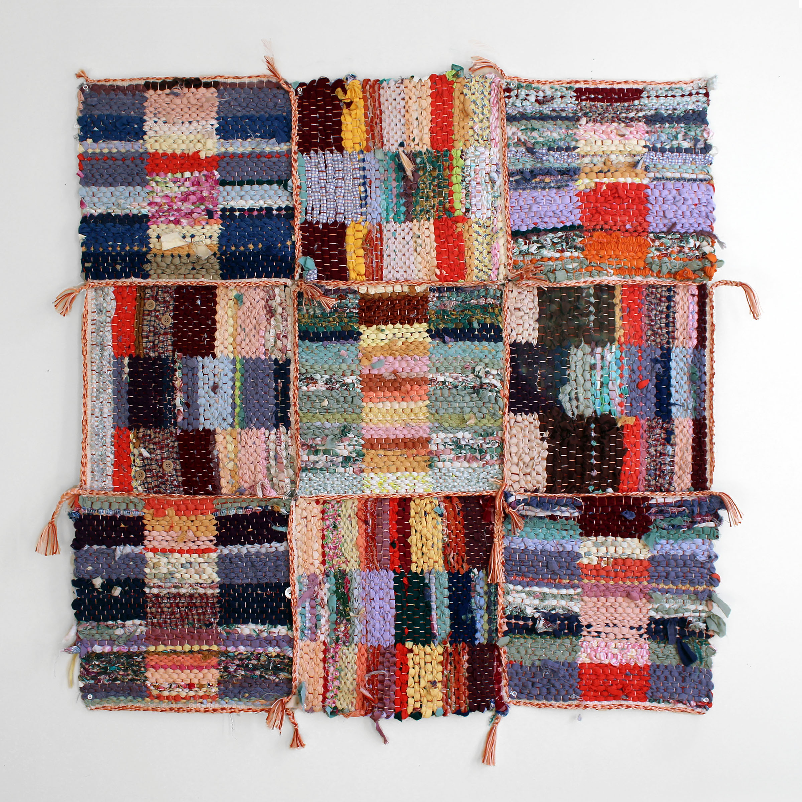
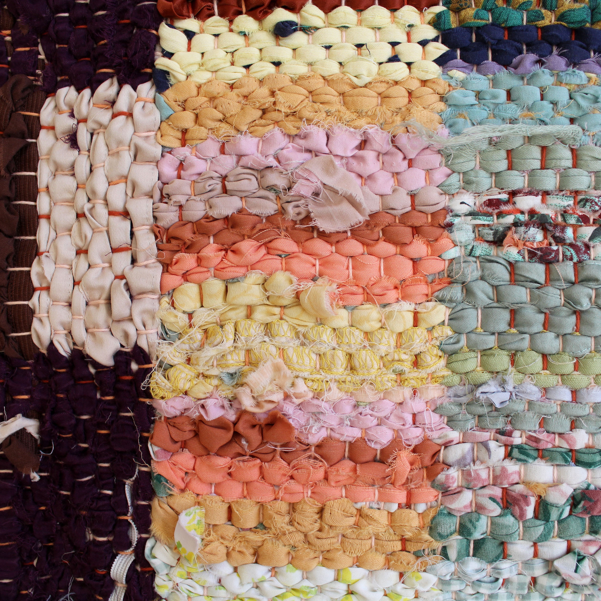
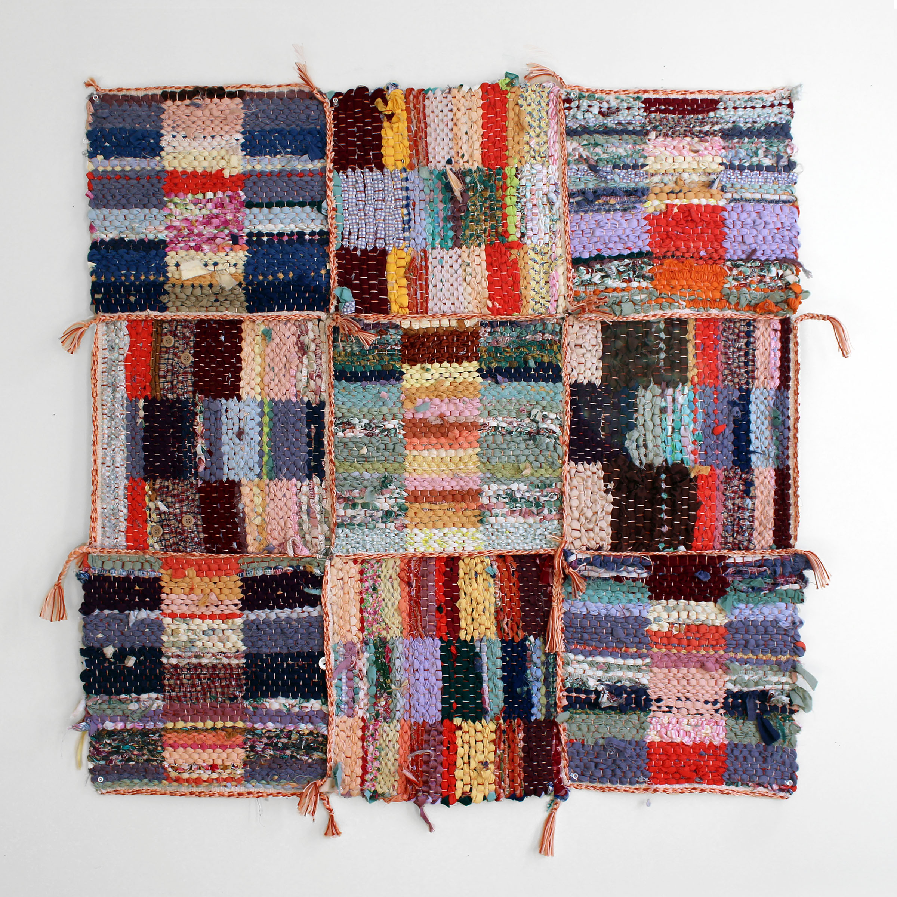
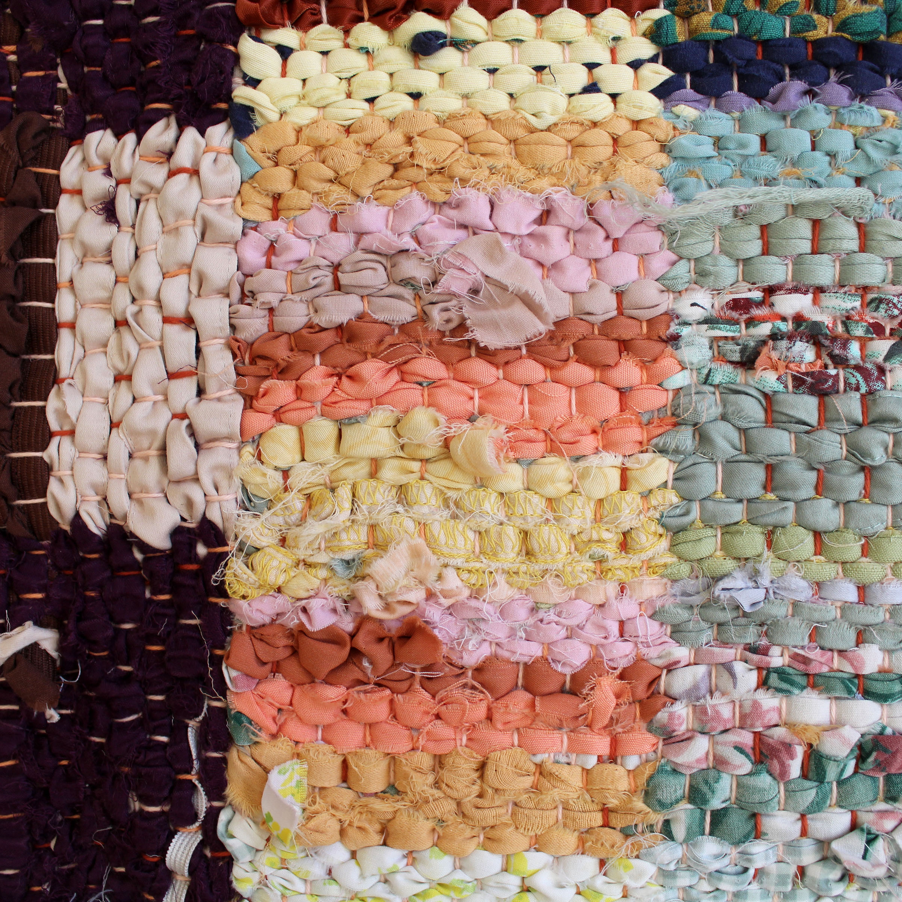
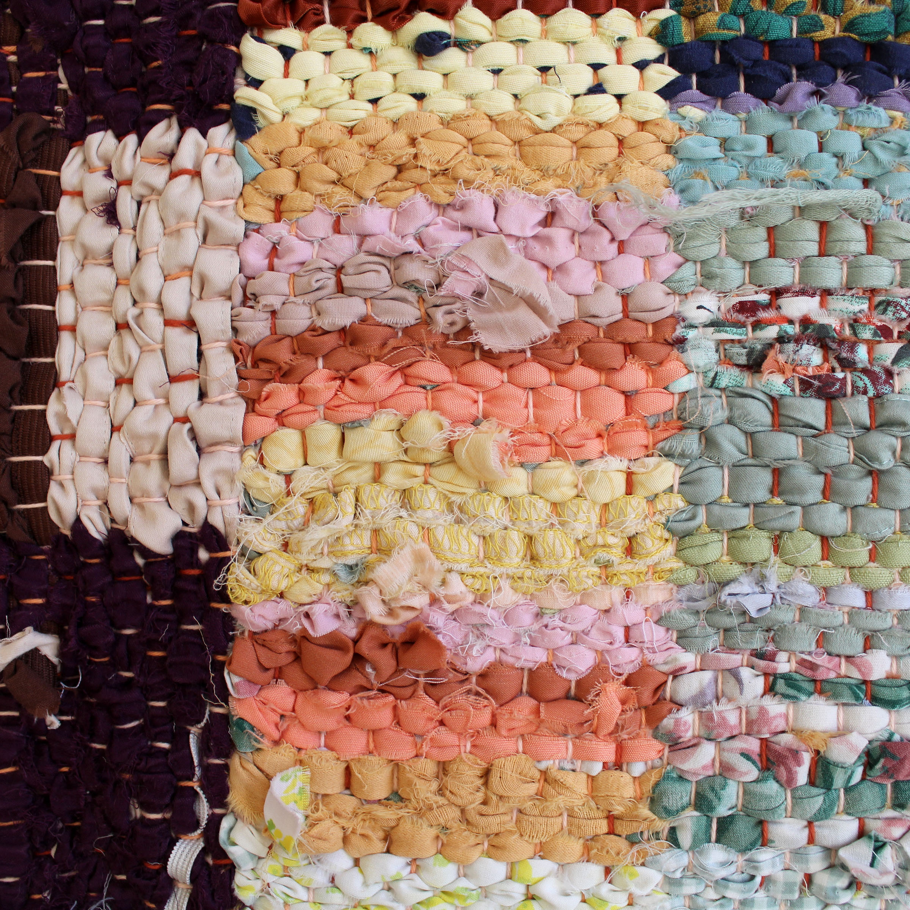
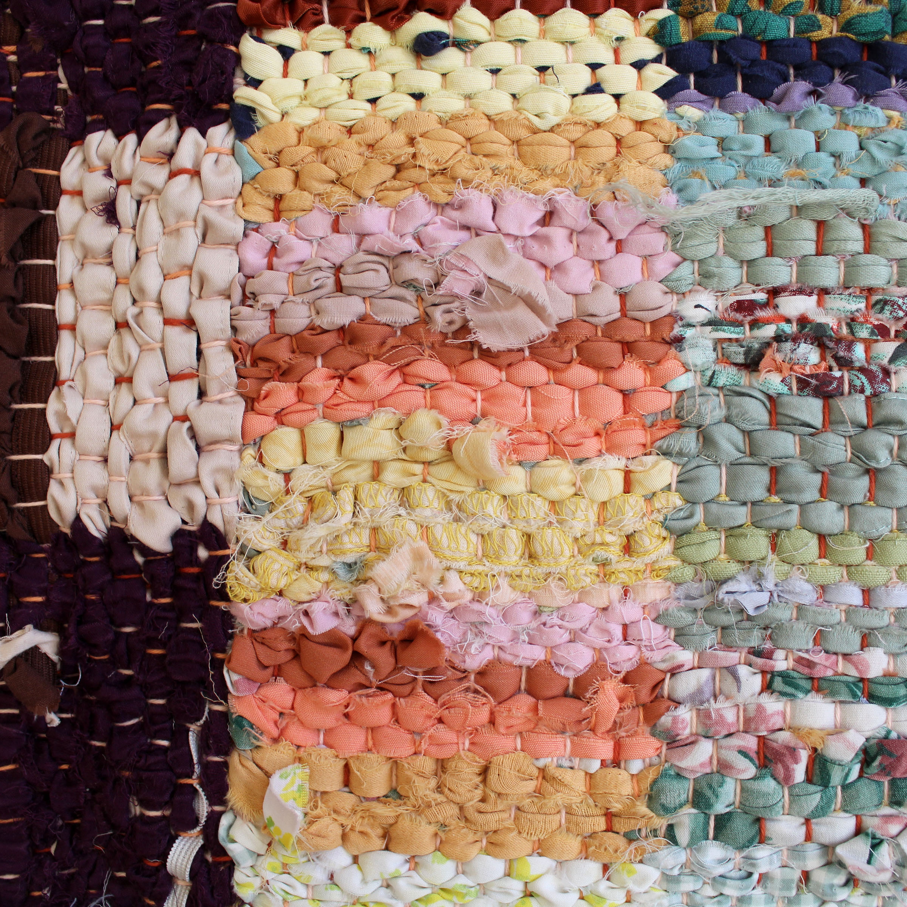

Building Drawings
 




 

^ click through words/images/illustrations above ^
36" x 36"
Woven in nine parts on a floor loom, 9 square is an exercise in making a fragmented whole. Each square is woven using offcuts and and discarded pieces from previous projects. Elements that were previously considered inconvenient are embraced for the story that they tell. Buttons, tags, elastic and trim are sprinkled throughout and cut through the color play to remind us of the material’s history and function.
Woven in nine parts on a floor loom, 9 square is an exercise in making a fragmented whole. Each square is woven using offcuts and and discarded pieces from previous projects. Elements that were previously considered inconvenient are embraced for the story that they tell. Buttons, tags, elastic and trim are sprinkled throughout and cut through the color play to remind us of the material’s history and function.